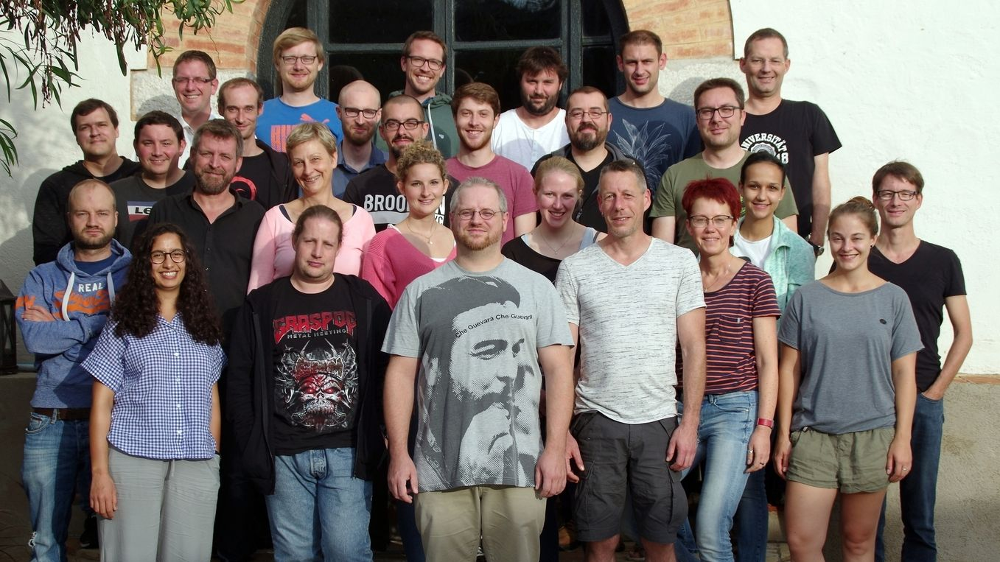

- Einführung und Basics
- Beispiel
- Ausblick
FOSS in der Cloud

Einführung und Basics
Cloud-Computing (deutsch Rechnerwolke oder Datenwolke) ist eine IT-Infrastruktur, die Speicherplatz, Rechenleistung oder Anwendungssoftware als Dienstleistung beinhaltet. IT-Infrastrukturen werden über ein Rechnernetz zur Verfügung gestellt, ohne auf dem lokalen Rechner installiert zu sein. Angebot und Nutzung erfolgen durch technische Schnittstellen und Protokolle.
Frei nach Wikipedia, abgerufen am 06.03.2020
Einführung und Basics
- Durch wachsende Geodatenpools (Copernicus oder Landsat)
- Anforderungen an Hard- und Software für die Geodatenprozessierung steigen
- Arbeitsplatz immer wieder Hard- und Software nachrüsten
- Anschaffung, Betrieb und Wartung eigener Hardware. Die Benutzer können auf praktisch unbegrenzt verfügbare Ressourcen zugreifen ohne sich um die Installation und Pflege von Hard- und Softwareware kümmern zu müssen.
- Kapitalkosten vs laufende Kosten
- Automatisierung und Übertragbarkeit
Einführung und Basics
Infrastructure as a Service (IaaS), Platform as a Service (PaaS) und Software as a Service (SaaS)
- IaaS: Bereitstellung von technischer Infrastruktur wie Rechenleistung, Netzwerken oder Speicherplatz
- PaaS: Bereitstellung einer Plattform für Entwicklung und das Anbieten eigener Software-Anwendungen
- SaaS: auch Software on Demand , Bereitstellung reine Software-Anwendungen als Cloud-Dienst
Konzepte des Cloud Computings
- Serviceorientierung
- Cloud Computing nutzt Virtualisierung und das Internet zur dynamischen Bereitstellung von IT-Ressourcen. Dabei kann es sich um IT-Infrastruktur, Plattformen oder Anwendungen aller Art handeln. Cloud Computing bezeichnet also sowohl Anwendungen, welche als Dienste über das Internet angeboten werden, als auch auf die Hard- und Software, die in Rechenzentren zu deren Bereitstellung benötigt werden. Die Abrechnung erfolgt dabei stets nach Verbrauch.
Konzepte des Cloud Computings
Verfügbare Tools